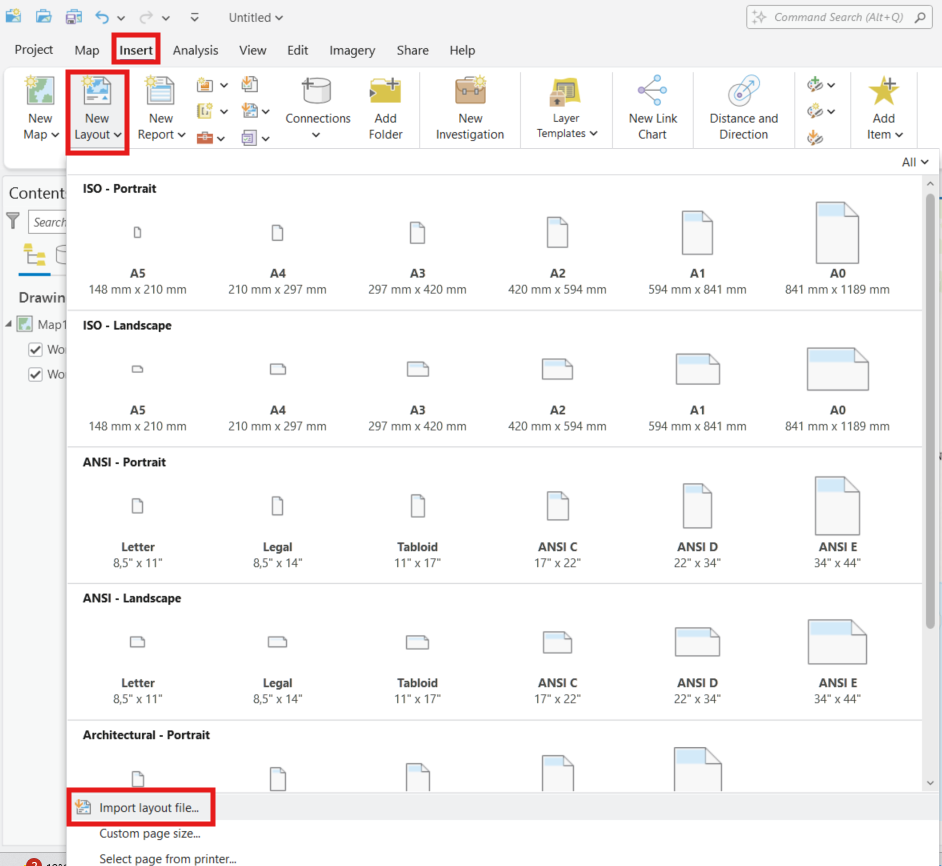

| Elemento | Descripción | Tipo |
|---|---|---|
| Mapa de Ubicación | Muestra el mapa de referencial o de ubicación a nivel regional | Map Frame |
| BarraEscala | Contiene elemento de la Barra de Escala | Scale Bar |
| Text 1 | Contiene el texto en viñeta de la escala numérica | Text |
| Leyenda | Elemento contiene el objeto Leyenda | Legend |
| Subtítulo | Texto para subtítulo en viñeta | Text |
| Título | Texto para título en viñeta | Text |
| SistemaDeReferencia | Texto para información de Sistema de Referencia utilizado | Text |
| Norte | Contiene elemento para señalar Norte Verdadero | North Arrow |
| LogoIdiem | Contiene logo Idiem institucional | Picture |
| MarcoLogo | Elemento o marco para logo idiem | Graphic |
| DatosGeodesicos | Elemento o marco para Datos Geodésicos | Graphic |
| DatosPrincipales | Elemento o marco para Datos Cartografia | Graphic |
| MapaPrincipal | Contiene Map Frame Principal | Map Frame |
| Marco | Marco general del mapa | Graphic |
Manual para la Creación de Cartografía en ArcGIS Pro a partir de Layouts
Contacto:
1 Introducción
Este instructivo está dirigido a usuarios del proyecto Araucancía y necesitan crear diseños de mapas, mediante el uso de la interfaz de diseño o Layout de ArcGIS Pro. Aquí se explican los pasos, desde la carga del mapa, hasta la exportación final, incluyendo la creación de series de mapas (map series).
2 Layout en ArcGIS Pro
2.1 Abrir Proyecto
Paso 1: Abre ArcGIS Pro
Paso 2: Haz clic en “Open another project” o “New Project” si deseas comenzar desde cero.
2.2 Importar archivo .pagx
Paso 3: Para cargar layout, debes descargar los formatos IDIEM (archivos con extensión .pagx) a partir de ArcGIS Online e importarlos en ArcGIS Pro. Para esto debe seguir el siguiente paso a paso:
- Descargar archivo Descarga Layout AGOL
- Dirigase a pestaña ‘Insert’
- Luego New Layout
- Import Layout File
Figura 1: Importar Layout en ArcGIS Pro

3 Ajustes al Diseño
Para realizar ajustes al diseño o layout. Ya sea para aplicar máscara, ajuste Cartografía Base, modificar simbología, ajuste de Transparencia del algúna capa, etc. Se debe conocer la composicion de cada elemento del diseño.(Mapa de ubicación, BarraEscala, Textos, Leyenda, Mapa Principal, etc.) y como entrar a su configuración. Para esto se describirán los elementos de la plantilla:
Figura 2: Elementos del Layout
3.1 Configurar Mapa Principal
Para modificar el mapa principal u otros elementos del diseño, primero es necesario revisar el ícono del “candado” asociado a cada uno de estos items. Esto permite bloquear o desbloquear el elemento para habilitar o restringir su edición. Además, es importante tener en cuenta que cada componente del layout puede estar activado o desactivado. Esta configuración determina si el elemento se muestra o oculta en el diseño final, según los requerimientos del mapa. Para configurar, se debe hacer clic en algun elemento. Para los Map Frame. Debo hacer click derecho y seleccionar Open, tal cual muestra la siguiente imagen:
Figura 3: Configurar Map Frame Principal
3.2 Ajustes en Vista de Mapa
Una vez abierta la vista de mapa, podrá realizar todos los ajustes necesarios y agregar capas que considere relevantes para su cartografía final. En esta etapa, podrá realizar todos los ajustes relacionados a querys, simbologías, etiquetados, nivel de transparencia, etc. Importante es que debe considerar, que todo ajuste realizado en la vista de mapa, automáticamente se verá reflejado en el diseño que tiene ya incorporado a su sesión de ArcGIS Pro (esto incluso para el mapeo en serie).
Figura 4: Ajustes vista de Mapa
4 Mapeo en Serie
Una serie de mapas es una colección de páginas (también conocidas como hojas de mapas) creadas a partir de un diseño único , donde cada página muestra una extensión específica del mapa. Las páginas de una serie de mapas pueden tener elementos dinámicos que se actualizan en cada página, como la escala o el título del mapa, y elementos estáticos que se mantienen constantes en todas las páginas, como los gráficos. Map Series. Recuerde revisar presentación Mapeado en Serie – ArcGIS Pro. Para activar el mapeo en serie espacial, debe posicionarse en la vista de diseño, luego boton derecho en nombre de Layout y seleccionar properties.
Figura 5: Seriado de Mapas
4.1 Map Series Spatial
Luego deberá habilitar map series y elegir la opción “Spatial”. A continuación deberá seleccionar una capa índice, para realizar el seriado a partir de un feature que ud deternine por ej: “Comunas”, “PostasEcuelasAraucania3”, entre otras. También en Optional Fields, podrá agrupar por algun campo en específico por ejemplo, utilizar campo “Provincia”.
Figura 6: Map Series Spatial

4.2 Configurar Escala por Comuna
Para configurar la escala de visualización por comuna, se crea un campo llamado ‘escala’ en la capa “ComunasAraucanía”. En este campo se define la escala específica que debe aplicarse a cada una de las comunas. Esto permite que la serie de mapas se genere con una escala personalizada, adaptándose al tamaño y extensión territorial de cada comuna.1.
Figura 7: Ajuste Escala Map Series
4.3 Map Series Thematic
Una serie de mapas temáticos es un diseño que comprende un conjunto de páginas de salida generadas mediante la iteración a través de cada subcapa en una Capa de Grupo de Radio. La extensión del mapa en cada página es la misma, pero la subcapa visible de la capa de grupo difiere. Se crea una página para cada subcapa con solo esa subcapa visible y todas las demás están desactivadas. Las capas que no están en la capa del grupo de radio son visibles en todas las páginas. Lamentablemente tiene algunas limitantes, pero es un flujo de trabajo alternativo según el dominio de la interfaz de diseño de ArcGIS Pro. Algunas características de este seriado es que: el mapa no cambia de posición, escala se mantiene fija, etc. Por tanto está pensando para trabajar una región completa y desde alli, usar distintos atributos de una capa determinada, para representar por ejemplo cantidad de población comunal para la región de la Araucanía, indice de natalidad por comuna, concentración de rangos etarios por comuna, entre otras. Es decir, podría tener todas estas temáticas para la región incorporado en el seriado.
| Característica | Spatial | Thematic |
|---|---|---|
| Propósito principal | Crear mapas por entidades geográficas (e.g., comunas) | Cambiar visibilidad de capas/grupos según un campo temático |
| Encuadre automático del mapa | Sí (centrado y escala por entidad) | No (el mapa no cambia de posición ni escala) |
| Requiere capa poligonal | Sí (índice espacial) | No necesariamente |
| Control de visibilidad | Opcional, pero no automático por entidad | Sí, cambia qué capas/grupos se muestran por página |
| Escala personalizada por página | Sí (campo de escala) | No (se mantiene fija en todas las páginas) |
| Configuración inicial | Más automática (con capa de índice) | Requiere más preparación en nombres de capas y campos temáticos |
| Uso típico | Series por zonas: comunas, predios, sectores | Series con layout fijo: mostrar distintas variables, radios, etc. |
| Requiere nombre de capa igual al campo | No | Sí, para coincidir visibilidad (match layer names) |
5 Exportación de los Mapas Seriados
Para exportar los mapas estando en la vista de diseño, se debe seleccionar la pestaña Share, luego elegir la opción Export Layout y seleccionar el formato que se necesita.
Figura 8: Exportar Mapas
Finalmente en opción File Type2 puede seleccionar tipo de archivo de descarega, ajustar la ruta de salida de la exportación, ajustar calidad de la salida, DPI y entrar a la opción de Map Series, donde se podrá exportar todas las páginas, la página actual, sleccionar página específica o un rango determinado; esto de acuerdo a la siguiente imagen:
Figura 9: Propiedades del exportado en Serie